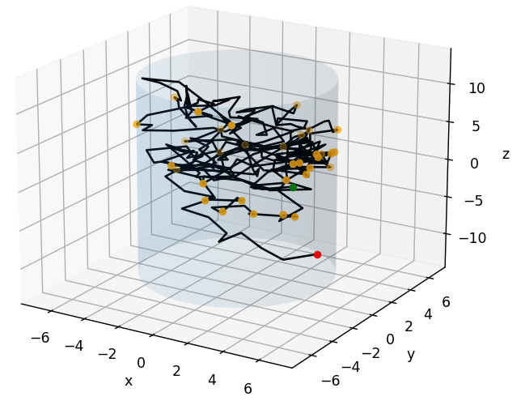

I am a recent Master of Physics graduate from the University of Manchester, excelling in computational physics projects across C,C++ and Python. I am keen to step into graduate technical roles, whether in software engineering, data analysis or mathematical modelling. I am always curious to learn new concepts and apply them. For now, I am applying newly acquired skills in html and CSS from codecademy and developing this page! I am updating this page to document my previous computational projects that I have undertaken at University and in internships abroad. In the future, I hope to share new personal projects and write about my developing interests in tech. Please reach out if you have any career opportunities, or if you'd just like to collaborate on a project or compete in a hackathon together!
 Toy model of fractional Brownian motion, confined in a cylinder.